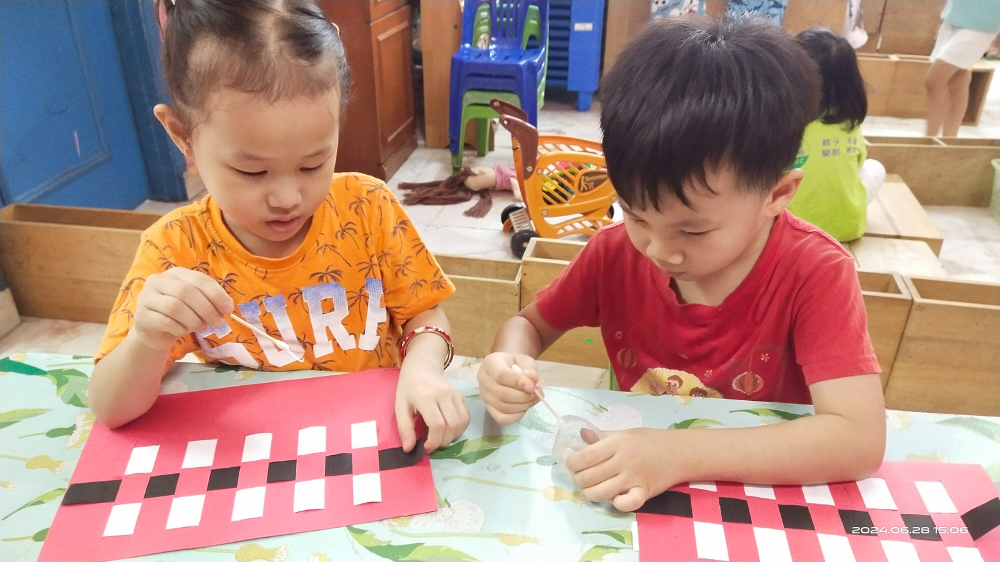

“孩子们民主票选出的《好玩的水》主题，充满了探究与欢笑！一起来看看宝贝们的精彩收获吧👇
✨ 奇妙科学大探索：动手做“倒立水瓶”与“胡椒粉逃跑”观察表面张力；玩“颜色水搬家”发现毛细现象；还有“钓冰块”、水压喷泉，甚至在家长的协助下成功发射了自制“水火箭”！🚀
🏆 “水的运动会”学合作：在“向后传水”、“海绵运水”和“筷子夹瓶盖”等游戏中，宝贝们手眼并用、策略分工，收获了满满的团队默契与欢笑。🤝
🌱 爱护水资源与大自然：走遍校园追踪水源、了解自来水净化过程，懂得了节约用水；还在地球日亲手揉捏“种子地球”,见证绿豆破土而出的生命力！🌱
在玩中学、做中悟，把好奇心变成探索世界的勇气，这就是我们的日常！
“这个月，学园的空气里满是幸福的味道！孩子们开启了一场味蕾与科学交织的烘焙之旅。
🍪 Famous Amos 挑战：从精准秤量面粉、黑糖到观察“糖油混合”的神奇变化，孩子们像严谨的实验员一样完成了高难度的巧克力曲奇制作。经过 24 小时的耐心冷藏，饼干在烤箱里膨胀上色，那股浓郁的香气让全班都沸腾了。最让老师感动的是，大家还通过数学点算，确保每位师生都能分享到这份亲手制作的甜蜜。
🍕 手抓饼 Pizza 创意：谁说披萨很难做？孩子们用手抓饼当底，熟练地卷起边圈、刷上番茄酱，再大方铺满自己挑选的蘑菇、香肠和芝士。看着乳酪在烤箱里滋滋融化，每一口吃下去都是满满的成就感，大家直呼“真的很好吃！”
在揉捏与等待中，孩子们不仅学会了烹饪，更在数学统计、科学观察与分享美德中悄悄成长。教育，原来可以这么好玩又好吃！✨”